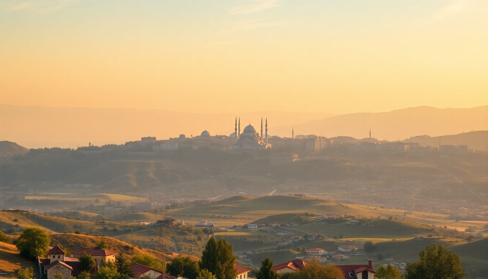

7-Day Turkey Itinerary: Istanbul, Cappadocia, Pamukkale

I just got back from a week in Turkey, and it felt like three trips crammed into one. Istanbul’s chaos, Cappadocia’s moonscape, and Pamukkale’s white terraces. The key is not overpacking each day. Here’s exactly how I did it—what worked, what I’d skip, and where I’d spend more time.
What is the best way to get from Istanbul to Cappadocia?
Fly. Don’t even think about the overnight bus unless you’re broke or a masochist. Turkish Airlines and Pegasus run multiple daily flights from Istanbul’s Sabiha Gökçen (SAW) and Istanbul Airport (IST) to Kayseri (ASR) or Nevşehir (NAV). Flight time is about 90 minutes.
- Book early morning flights (6–8 AM) to maximize your first day in Cappadocia.
- From Kayseri airport, it’s a 45-minute shuttle to Göreme. Most hotels arrange transfers for €10–15 per person.
- Pegasus from SAW is usually cheaper, but SAW is farther from Sultanahmet. Budget 90 minutes by taxi or Havabus shuttle.
- Return flight: I flew back from Kayseri to Istanbul at 5 PM on Day 4—gave me a full last morning in Cappadocia.
What are the top things to do in Istanbul in two days?
Two days in Istanbul is tight, but doable if you stay in Sultanahmet. I based myself at Hotel Amira near the tram line—quiet street, rooftop breakfast with sea views, and a 10-minute walk to Hagia Sophia.
- Day 1 morning: Hagia Sophia and Basilica Cistern. Book skip-the-line tickets for the Cistern; the queue can hit 45 minutes. Hagia Sophia is free entry now, but expect crowds by 10 AM.
- Day 1 afternoon: Grand Bazaar (go for the vibe, not the shopping—stick to Spice Bazaar for actual spices). Lunch at Deraliye Ottoman Cuisine near the Arasta Bazaar—tested kebab and lamb shank.
- Day 2 morning: Topkapi Palace. Give it 2.5 hours—the Harem section costs extra but is worth it for the tile work.
- Day 2 afternoon: Bosphorus ferry from Eminönü to Üsküdar (just a 20-minute ride, cheap, great photos). Grab fish sandwich from the boats at the dock.
- Evening: Walk through Galata neighborhood, ride the Tünel funicular (oldest in Europe still running), and grab a drink at Mikla rooftop if your budget allows.
How many days do you need in Cappadocia?
Three nights, two full days is the sweet spot. I landed in Göreme at 10 AM on Day 3 and left at 5 PM on Day 5. That gave me two mornings for the balloon ride and one full day for the Red Tour loop.
- Hotel: Mithra Cave Hotel in Göreme. Cave room, real fireplace, and a rooftop with sunrise balloon views that rival the more expensive Sultan Cave Suites next door.
- Balloon ride: Book with Butterfly Balloons or Royal Balloon. I paid €180 per person, which included pickup, breakfast, and a champagne toast after landing. Worth every lira.
- Red Tour (self-guided): Rent a scooter from Apex Rentals in Göreme (€25/day). Hit Göreme Open Air Museum, Uçhisar Castle, Devrent Valley, and Paşabağ (three-headed fairy chimneys). Skip Zelve if you’re short on time—it’s a longer hike and similar to Paşabağ.
- Sunset spot: Lover’s Hill near Göreme. 15-minute walk from town center. Bring water and a jacket—wind picks up.
Is Pamukkale worth the detour?
Yes, but only if you go early and don’t treat it as a day trip from Istanbul. I took a 90-minute flight from Kayseri to Denizli (via Istanbul connection) on the morning of Day 6. I stayed one night at Pam Thermal Hotel a few blocks from the travertines.
- Travertine terraces: Enter through the south gate (near the ancient pool) at 7:30 AM when it opens. By 9 AM tour buses roll in and you’re walking in a human chain.
- Hierapolis ruins: Walk the main street to the Roman Theatre—it’s one of the best-preserved in Turkey. Skip the museum unless you’re a history buff.
- Cleopatra’s Pool: Overpriced (€15 entry) and crowded, but the submerged Roman columns are unique. I’d say go if you have an extra hour.
- Lunch: Kayaş Restaurant in Pamukkale village—tested pide and lamb tandır. Not touristy, prices fair.
- Getting out: I took a bus to Denizli Otogar (20 minutes, 15 TL) and then a high-speed train to Izmir for my flight home. You can also fly direct from Denizli to Istanbul.
What is the best order for this itinerary?
Fly into Istanbul, then Cappadocia, then Pamukkale, then fly out from Denizli or Izmir. I did Istanbul (2 nights) → Cappadocia (3 nights) → Pamukkale (1 night). That’s 6 nights, 7 days. If you have an extra day, add one more night in Istanbul to see the Chora Church (Kariye Mosque) and Fener-Balat neighborhoods.
- Flights: Book domestic legs in advance. Turkish Airlines allows free date changes 24 hours before departure.
- Baggage: Pegasus charges for carry-on over 8 kg. I used a backpack and checked it on the flights.
- SIM/eSIM: I used Airalo eSIM ($15 for 5 GB, 7 days). Worked well in all three cities. Avoid buying a SIM at the airport—long lines and expensive plans.
How much time should you spend at each site?
Realistic time budgets, not guidebook estimates:
| Site | Time Needed | Notes | |------|-------------|-------| | Hagia Sophia | 45 min | Free entry, no queue if you go at 8 AM | | Basilica Cistern | 30 min | 20 min inside, 10 min queue | | Topkapi Palace | 2.5 hours | With Harem: 3.5 hours | | Bosphorus ferry | 1.5 hours | Round trip from Eminönü to Üsküdar | | Göreme Open Air Museum | 1.5 hours | Arrive at 8 AM to beat crowds | | Uçhisar Castle | 30 min | Climb to the top for panoramic shots | | Pamukkale travertines | 1 hour | Barefoot walk, no shoes allowed | | Hierapolis ruins | 2 hours | Main street + theatre is enough |
FAQ
Is it safe to travel to Turkey right now? Yes, I felt safe in all three cities. Standard precautions apply—watch your wallet in crowded bazaars, don’t walk alone late in empty areas. Tourist police are visible in Sultanahmet and Göreme. The only scam I encountered was a “friendly” shoe-shiner who dropped his brush near me in Istanbul—just keep walking.
Can you do this trip on a budget? Yes, but the balloon ride is non-negotiable cost-wise. I spent about $1,200 total (excluding international flights) on hotels, domestic flights, tours, food, and transport. Budget tips: stay in hostels or pension-style hotels (like Şiraz Hotel in Göreme), eat at lokantas (local eateries), and skip the guided tours—self-guide with Google Maps and a scooter.
What should I pack for this itinerary in spring or fall? Layers. Istanbul and Pamukkale were warm (20–25°C) in April, but Cappadocia mornings were 5°C with wind. I packed: a light puffer jacket, hiking shoes (for the valleys), a scarf (for mosques), and a refillable water bottle. The sun is strong at Pamukkale—bring sunscreen and sunglasses.